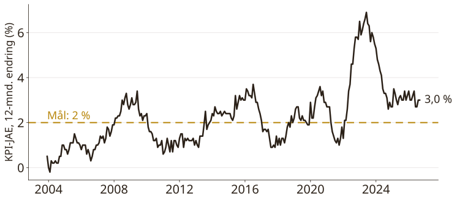
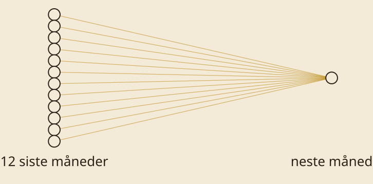
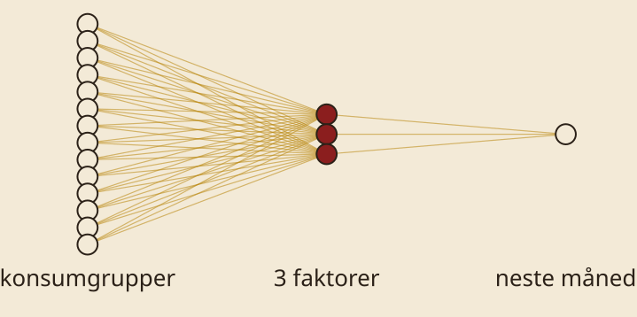
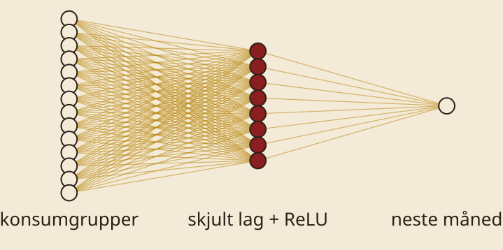

Fra statistiske modeller til nevrale nettverk
eide.ai
Data → Modell → Trening → Handling

SMART: ~500 modeller



for epoch in range(2000): optimizer.zero_grad() loss = ((model(x) - y) ** 2).mean() loss.backward() optimizer.step()
Din prognose for oktober?